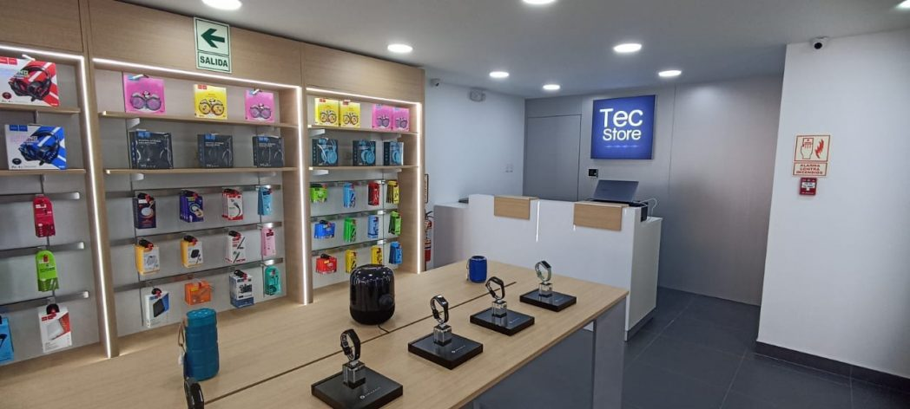

Todo comenzó con una idea simple: hacer que la tecnología esté al alcance de todos. Iniciamos vendiendo computadoras desde un pequeño local, con un sueño y mucha pasión por ayudar.

Con el paso del tiempo, fuimos creciendo y ampliando nuestro catálogo. Hoy ofrecemos una gran variedad de equipos tecnológicos: computadoras, laptops, cámaras, DVR, routers, impresoras, monitores, componentes y accesorios, brindando soluciones tanto para el hogar como para empresas.
Pero no solo pensamos en la tecnología, sino también en las personas. Por eso, nuestra página web fue creada con accesibilidad digital, para que cualquier persona —incluyendo quienes tienen discapacidad visual o motora— pueda navegar, comprar y comunicarse fácilmente.

Hoy, TecnoVision Perú sigue creciendo con el mismo espíritu: acercar la tecnología a todos y construir un futuro más conectado e inclusivo.
“Porque la tecnología debe ser para todos.”